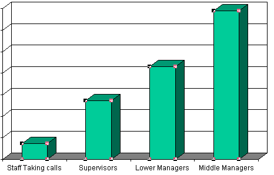
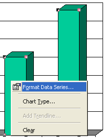
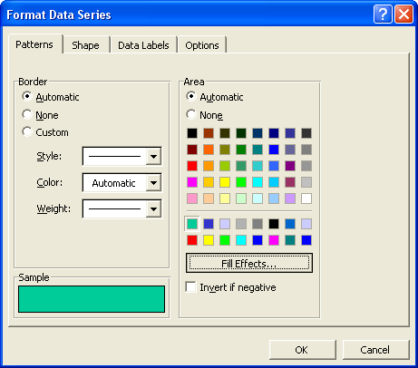
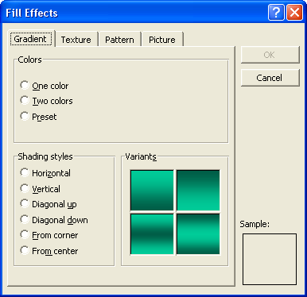
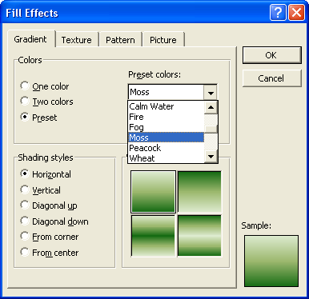
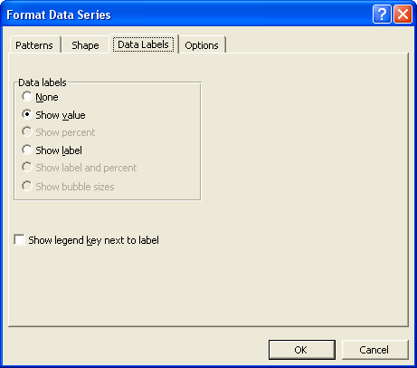
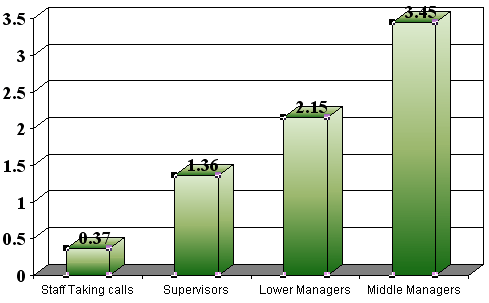

Free
powerpoint
Tutorials
|
Free
powerpoint
Tutorials
|
|
 home home |
Stay at Home and Learn | ||||
Format the Bars of a PowerPoint Chart |
|||||
|
Charts 1, 2, 3, 4, 5, 6, 7, 8, 9, 10, 11, 12 Flow Charts Tables
The bars of a PowerPoint chart are called Data Series. You can format these. To do so, click on any of the bars to select them all. You can tell that you have selected all the bars when you see black and red squares around the outside, as in the image below:  As you can see, each of the four bars has red or black squares around the outside. When your bars are selected, right click any bar. You'll see a context menu appear. Select Format Data Series:  When you click on Format Data Series, you'll see the following dialogue box appear:  You can choose a colour from this Tab of the dialogue box. You can also set the line style around each bar. But we'll go for a Fill Effect. Click the button under the colours, the Fill Effects button. You'll see a new dialogue box appear:  This is the Gradient Tab. Select the Preset option at the top, and you'll see a dropdown list:  Click each one and you'll see a preview. But we went for the Moss option. For the Shading Styles, we left it on Horizontal. Play around with the options, though, and see what they look like. Click OK when you're happy with your Gradient choices. You will then be returned to the Format Data Series dialogue box. On the Format Data Series dialogue box, click on the Data Labels Tab:  Select the option Show value. This will put the numbers from the Datasheet on top of each bar. Click OK on this dialogue box. Your chart will then change to this:  Your PowerPoint chart is nearly there! Only one more thing left to do, now, and that's move the Series Legend to the left.
|
||||